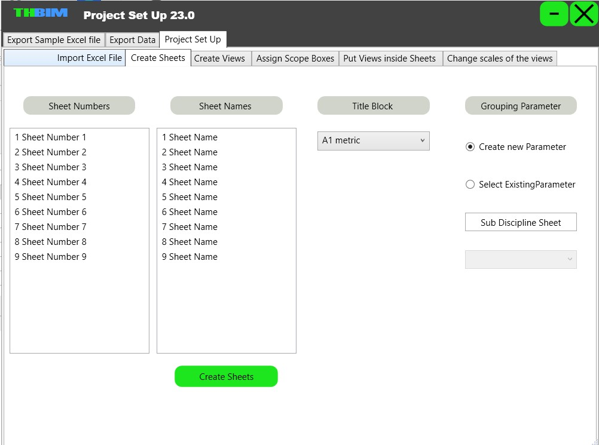

Portfolio
Necessitatibus eius consequatur ex aliquid fuga eum quidem sint consectetur velit
- All



What is TH‑BIM Electrical Cables Add‑in?
- Add your Cables Data to the existing Database if you need.
- Graphically model cables connecting electrical panels or devices in your Revit model with two clicks.
- Find the shortest path through the cable trays to connect the two Elec Panels
- You can select your path
- Easily to tag the cable with all your required data (Cable Name, From, To, etc.).
- Automatically extract a comprehensive cable BOQ (lengths, types, counts, etc.).
- This tool is ideal if you're working in MEP or construction and want to save time on cable documentation.
What is TH‑BIM Project Setup Add‑in?
- Use Excel to define and manage views, sheets, scope boxes, templates, and scales.
- Create multiple floor plans and ceiling plans in one step based on Excel input.
- Automatically generate sheets with names, numbers, and title blocks.
- Assign views to sheets and control their scale and placement automatically.
- Apply specific scope boxes to each view for clear, consistent crop regions.
- Assign view templates to ensure visual and standardization consistency.
- Export all available project data (levels, templates, scope boxes, etc.) into Excel to help you prepare input files accurately.
- This tool is perfect for speeding up early project setup while maintaining project standards.
What is TH‑BIM Express Clash Solver of MEP?
- Solve clashes for ducts, pipes, cable trays, and conduits with just one click.
- Select the clashing element and move it in the direction you want: up, down, left, or right.
- No need to open section views or redraw geometry.
- Maintain the element’s size, slope, and fittings during movement.
- Ideal for coordination meetings, fast fixes, and reducing modeling time.
- Boosts your productivity by eliminating repetitive, manual clash resolution steps.
- Rotate cable trays with respect to their original direction for quick directional adjustments.
What is TH‑BIM Point2Point Add‑in?
- Select two points or families to draw connecting lines automatically.
- Choose to draw one, two, or three lines between selected elements.
- Select multiple families and generate all connection lines at once.
- Ideal for shop drawings, cable tray runs, or routing diagrams.
- Fast and accurate line generation — no manual sketching needed.
- Huge time-saver for MEP and coordination drawings.
What is TH‑BIM Fillet Lines Add‑in?
- Create smooth fillets between two selected lines based on a bend radius you choose.
- Select multiple lines to automatically fillet between each pair of neighboring lines.
- Ideal for modeling cable runs, piping offsets, and detailing rounded connections.
- Works with detail lines, model lines, and symbolic lines.
- Improves readability and realism of your shop drawings and 2D documentation.
What is TH‑BIM Connect Junction Box Add‑in?
- Connect two junction boxes automatically with conduits.
- Choose between “L” (2 conduits) or “Z” (3 conduits) layout styles.
- Handles different Z-locations — no need for level matching.
- Respects connector directions and placement for clean geometry.
- Saves massive time when modeling LOD 450 junction box connections.
- Ideal for electrical modelers working on detailed coordination layouts.
What is TH‑BIM Connect Junction Box and Back Box Add‑in?
- Connect ceiling-mounted junction boxes to wall-mounted back boxes or switches.
- Supports both L-mode (2 conduits) and Z-mode (3 conduits) connections.
- Automatically detects conduit connectors on both boxes.
- Handles height differences between ceiling and wall elements.
- Saves time and improves accuracy in LOD 450 modeling.
- Great for electrical coordination and shop drawing preparation.
What is TH‑BIM Copy Families Add‑in?
- Copy a family instance above another — such as placing junction boxes above lighting fixtures.
- Batch select host families and automate the copying process.
- Control vertical placement using offset values for perfect alignment.
- Ensure accurate coordination and eliminate repetitive manual work.
- Save hours on repetitive placement tasks in large MEP models.
What is TH‑BIM Renumber Elements Add‑in?
- Apply serial numbers to selected families.
- Support for ascending or descending order.
- Add prefix and/or suffix to numbers.
- Store results in an existing or new parameter.
- Essential for fire alarm, devices, or equipment layouts.
- Perfect for LOD preparation and documentation control.


üî¢ Auto-Generate Text Notes
Quickly generate a series of text notes with structured numbering.

üìù Add Prefix or Suffix
Customize the number format with a label before or after the series value.
⬆️⬇️ Control the Order
Choose ascending or descending numbering based on project requirements.
What is TH‑BIM Assign Number in Text Note Add‑in?
- Create multiple text notes automatically with structured series numbers.
- Supports prefix, suffix, and custom part formatting.
- Select ascending or descending numbering direction.
- Ideal for tagging fire alarms, equipment, or shop drawing annotations.
- Eliminates manual text note duplication and renumbering.
What is TH‑BIM Cable Tray Between Equipment Add‑in?
- Create cable tray connections from equipment to the main tray in just two clicks.
- Automatically detects endpoints and places trays accordingly.
- Perfect for linking DBs, panels, and major devices to the tray network.
- Reduces coordination errors by ensuring proper connectivity.
What is TH‑BIM Junction Box and Fixture Connecting Add‑in?
- Connects ceiling junction boxes to lighting fixtures automatically.
- Draws flexible conduits that match project requirements for LOD 450.
- Perfect for use in false ceiling spaces or complex coordination areas.
- Smart detection of element heights and connector points.
- Saves hours of manual routing and trial-and-error adjustments.
What is TH‑BIM Move Elements Add‑in?
- Move elements freely in X, Y, and Z directions.
- No need to create sections or plans to make spatial adjustments.
- Save time on layout changes and coordination fixes in 3D.
- Input exact distances for accurate element relocation.
- Ideal for quick spatial corrections in dense MEP models.

What is TH‑BIM Generate Cable Tray Section Add‑in?
- Create cable tray sections with cable lines automatically.
- Control spare space, cable spacing, and tray height.
- Customize cable count and positioning easily.
- Outputs section in a clean drafting view for documentation.
- Perfect for shop drawings and coordination packages.